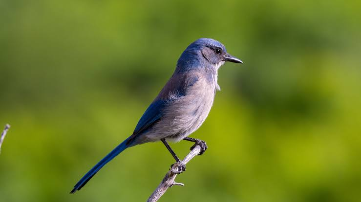

Scrub-bird
Birds
Scrubbirds are shy, secretive, ground-dwelling birds of the family Atrichornithidae. There are just two species. The rufous scrubbird is rare and very restricted in its range, and the noisy scrubbird is so rare that until 1961 it was thought to be extinct. Both are native to Australia.
Scientific name: Atrichornis
Phylum: Chordata
Order: Passerine
Rank: Genus
Higher classification: Atrichornithidae
Family: Atrichornithidae; Stejneger, 1885
Scrub-bird, either of two species of rare Australian birds comprising the family Atrichornithidae (order Passeriformes), allied to lyrebirds. Both species are brown, with a longish, pointed tail—rather like the brown thrasher of the United States.
The 22-centimetre (9-inch) western, or noisy, scrub-bird (Atrichornis clamosus), discovered in dry brushlands of Western Australia in the 1840s, was believed extinct after 1889 but was rediscovered in 1961.
The 18-centimetre (7-inch) rufous scrub-bird (A. rufescens), discovered in the 1860s in wet forests of New South Wales, 2,500 miles (4,000 km) away from the other species, is now known to range to Queensland, where it is protected in Lamington National Park.
Scrub-birds seldom fly but can disappear quickly afoot. Their near flightlessness is reflected in their anatomy: their clavicles are so poorly developed that they do not join, and, thus, scrub-birds are the only passerines lacking a wishbone.
Their voice is remarkable: painfully loud, highly varied, and ventriloquial. The nest, on the ground, is a bulky, domed affair lined, uniquely, with wood pulp that dries to a cardboardlike consistency.